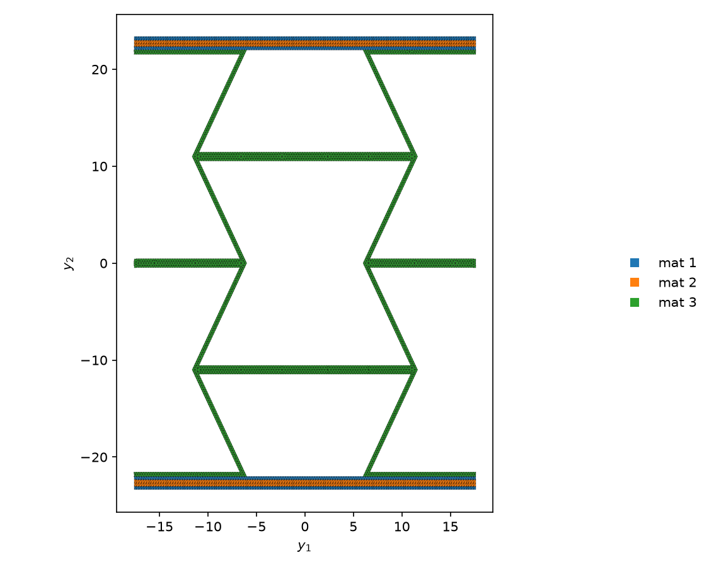

03 Plate homogenization#
This tutorial turns a honeycomb sandwich cell into the law of a plate.
The SG#
examples/OpenSG-solid/3_get_plate_props_from_2D_SG/RHC_SW_2UC_45.yaml is a 2-D SG: one period of the panel, cut
through its thickness. It has 4251 nodes and 6640 three-node triangles. The coordinates are in mm and the moduli in
MPa. The cell is 35.248 mm wide (y2 from -17.624 to 17.624 mm) and 46.7 mm thick (y3 from -23.35 to 23.35 mm).


This is the RHC_SW_2UC_45_mesh.png that the run writes. Its horizontal axis is y2 and its vertical axis is y3.
OpenSG labels them y1 and y2, after the first and the second node coordinate. Materials 1 and 2 are the face plies
at +45 and -45 degrees, 1128 elements each. Each face stacks material 1, material 2 and material 1 again. Material
3 is the honeycomb core, 4384 elements. The SG yaml page lists their constants.
The plate axes: axis 1 is normal to the picture, axis 2 runs along y2, and axis 3, the thickness, runs along y3.
The header asks for the shear-refined plate law:
n_model: 2 # 1 = beam, 2 = plate, 3 = solid -- the macro model this SG homogenizes to
refined: 1 # 0 = classical (plate ABD / beam EB); 1 = shear-refined (plate ABDG / beam Timoshenko)
msg: solid # the ENGINE this SG belongs to (opensg_solid); `opensg <yaml>` dispatches on it
Run it#
Run it in the example folder. From the root of the repository:
cd examples/OpenSG-solid/3_get_plate_props_from_2D_SG
opensg RHC_SW_2UC_45.yaml
============================================================================
OpenSG -- a multiscale structural analysis tool based on the Mechanics of
Structure Genome (MSG), developed by the Multiscale Structural Mechanics
Group led by Prof. Wenbin Yu at Purdue University
============================================================================
input : .../3_get_plate_props_from_2D_SG/RHC_SW_2UC_45.yaml
msg : solid (2D SG)
dofs : 12753
analysis : homo
macro : plate, shear-refined
frames : none in the file (material angle only)
solver : direct
U* residual: 0.0036 (Reissner-like reduction; the model is exact only as this -> 0)
Reissner-Mindlin Stiffness Matrix [N11 N22 N12 M11 M22 M12 Q1 Q2]:
[[ 3.35860e+05 7.75000e+04 1.43669e+02 4.14884e-01 1.48619e+00
-3.66029e-02 0.00000e+00 0.00000e+00]
[ 7.75000e+04 1.12911e+05 4.79132e+02 1.38295e+00 4.95397e+00
-1.22010e-01 0.00000e+00 0.00000e+00]
[ 1.43669e+02 4.79132e+02 1.05517e+05 -6.53070e-02 -2.18729e-01
4.11928e+00 0.00000e+00 0.00000e+00]
[ 4.14884e-01 1.38295e+00 -6.53070e-02 9.03675e+07 3.95405e+07
8.51827e+04 0.00000e+00 0.00000e+00]
[ 1.48619e+00 4.95397e+00 -2.18729e-01 3.95405e+07 5.70111e+07
2.65977e+05 0.00000e+00 0.00000e+00]
[-3.66029e-02 -1.22010e-01 4.11928e+00 8.51827e+04 2.65977e+05
4.60263e+07 0.00000e+00 0.00000e+00]
[ 0.00000e+00 0.00000e+00 0.00000e+00 0.00000e+00 0.00000e+00
0.00000e+00 2.69742e+04 -8.65272e-01]
[ 0.00000e+00 0.00000e+00 0.00000e+00 0.00000e+00 0.00000e+00
0.00000e+00 -8.65272e-01 9.78981e+01]]
Homogenization stored in RHC_SW_2UC_45.out
Time taken: 1.85 sec
The run writes two files next to the yaml:
file |
content |
|---|---|
|
the plate law: its stiffness and its compliance |
|
the mesh picture above |
OpenSG draws the mesh picture again only when it is missing or older than the yaml.
Read the .out#
The run replaces the RHC_SW_2UC_45.out that ships in the folder. The stiffness of the shipped file has the same
magnitudes to six significant digits, but nine pairs of coupling terms carry the opposite sign. This is the new
one, RHC_SW_2UC_45.out:
OpenSG msg-solid plate model, omega 35.248001, periodic
The Effective Reissner-Mindlin Stiffness Matrix
--------------------------------------------
3.3585973E+005 7.7500043E+004 1.4366892E+002 4.1488406E-001 1.4861903E+000 -3.6602857E-002 0.0000000E+000 0.0000000E+000
7.7500043E+004 1.1291139E+005 4.7913151E+002 1.3829469E+000 4.9539678E+000 -1.2200953E-001 0.0000000E+000 0.0000000E+000
1.4366892E+002 4.7913151E+002 1.0551654E+005 -6.5307010E-002 -2.1872937E-001 4.1192792E+000 0.0000000E+000 0.0000000E+000
4.1488406E-001 1.3829469E+000 -6.5307010E-002 9.0367521E+007 3.9540465E+007 8.5182653E+004 0.0000000E+000 0.0000000E+000
1.4861903E+000 4.9539675E+000 -2.1872937E-001 3.9540465E+007 5.7011050E+007 2.6597664E+005 0.0000000E+000 0.0000000E+000
-3.6602857E-002 -1.2200953E-001 4.1192791E+000 8.5182653E+004 2.6597664E+005 4.6026320E+007 0.0000000E+000 0.0000000E+000
0.0000000E+000 0.0000000E+000 0.0000000E+000 0.0000000E+000 0.0000000E+000 0.0000000E+000 2.6974186E+004 -8.6527238E-001
0.0000000E+000 0.0000000E+000 0.0000000E+000 0.0000000E+000 0.0000000E+000 0.0000000E+000 -8.6527238E-001 9.7898064E+001
The Effective Reissner-Mindlin Compliance Matrix
--------------------------------------------
3.5377569E-006 -2.4282695E-006 6.2094032E-009 -4.4599193E-014 1.4975938E-013 -4.9621975E-015 0.0000000E+000 0.0000000E+000
-2.4282695E-006 1.0523405E-005 -4.4478602E-008 3.1957869E-013 -1.0731115E-012 3.5555610E-014 0.0000000E+000 0.0000000E+000
6.2094032E-009 -4.4478602E-008 9.4773810E-006 -1.5736810E-014 5.4937600E-014 -8.4861117E-013 0.0000000E+000 0.0000000E+000
-4.4599184E-014 3.1957865E-013 -1.5736809E-014 1.5887212E-008 -1.1018861E-008 3.4272669E-011 0.0000000E+000 0.0000000E+000
1.4975936E-013 -1.0731114E-012 5.4937599E-014 -1.1018861E-008 2.5183261E-008 -1.2513586E-010 0.0000000E+000 0.0000000E+000
-4.9621976E-015 3.5555611E-014 -8.4861117E-013 3.4272669E-011 -1.2513586E-010 2.1727359E-008 0.0000000E+000 0.0000000E+000
0.0000000E+000 0.0000000E+000 0.0000000E+000 0.0000000E+000 0.0000000E+000 0.0000000E+000 3.7072491E-005 3.2766534E-007
0.0000000E+000 0.0000000E+000 0.0000000E+000 0.0000000E+000 0.0000000E+000 0.0000000E+000 3.2766534E-007 1.0214710E-002
Time taken: 1.85 sec
The banner names the model.
omega 35.248001is the width of the cell along y2 in mm, measured from the mesh.periodicmeans that the left and right edges of the cell, at y2 = -17.624 and 17.624 mm, are tied. The top and bottom faces of the panel are free.The stiffness is the 8x8 Reissner-Mindlin law. It takes the strains
[e11 e22 2e12 k11 k22 2k12 2g13 2g23]to the forces[N11 N22 N12 M11 M22 M12 Q1 Q2], the order the run prints.The compliance is the inverse of the stiffness.
Time takenis the solve time in seconds.
With N and mm, the blocks have these units. The compliance blocks have the inverse units.
block |
rows |
columns |
unit |
|---|---|---|---|
A, membrane |
1-3 |
1-3 |
N/mm |
B, coupling |
1-3 |
4-6 |
N |
D, bending |
4-6 |
4-6 |
N mm |
G, transverse shear |
7-8 |
7-8 |
N/mm |
The diagonal:
row |
force, strain |
value |
unit |
|---|---|---|---|
1 |
N11, e11 |
3.3585973E+005 |
N/mm |
2 |
N22, e22 |
1.1291139E+005 |
N/mm |
3 |
N12, 2e12 |
1.0551654E+005 |
N/mm |
4 |
M11, k11 |
9.0367521E+007 |
N mm |
5 |
M22, k22 |
5.7011050E+007 |
N mm |
6 |
M12, 2k12 |
4.6026320E+007 |
N mm |
7 |
Q1, 2g13 |
2.6974186E+004 |
N/mm |
8 |
Q2, 2g23 |
9.7898064E+001 |
N/mm |
What the numbers say:
The membrane stiffness along axis 1 is about three times the one along axis 2. The core walls run unbroken along axis 1. Along axis 2 they zigzag.
The B block is close to zero. Its largest entry is 4.95 N (row 2, column 5). The A entries are near 1E+05 N/mm and the D entries near 1E+07 to 1E+08 N mm. The cell is symmetric about its mid-plane, so B should vanish.
The transverse shear stiffness for 2g23 is far below the one for 2g13. Shear in the plane of the picture bends the zigzag walls.
The console also prints
U* residual: 0.0036. It measures how well the shear-refined fit holds for this cell. The fit is exact when it goes to 0.OpenSG's shear fit for a 2-D or 3-D SG is not yet validated against an external reference for an SG that is heterogeneous in plane, such as this cell. The theory page says the same. The A, B and D blocks do not depend on that fit.
Set refined: 0 in the header to get the classical 6x6 plate law instead. The .out then holds
The Effective Classical Plate Stiffness Matrix: the A, B and D blocks above, equal to six significant digits.
Go back to the root of the repository before the next tutorial:
cd ../../..